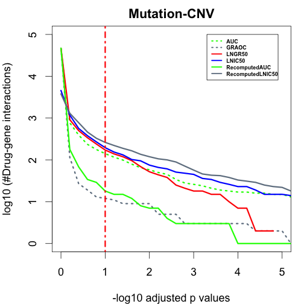
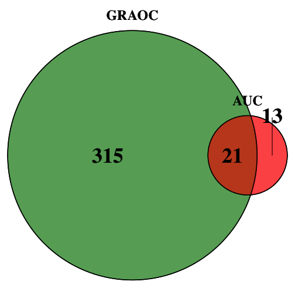
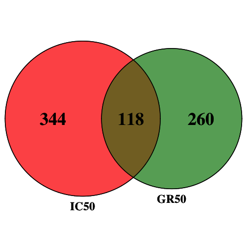
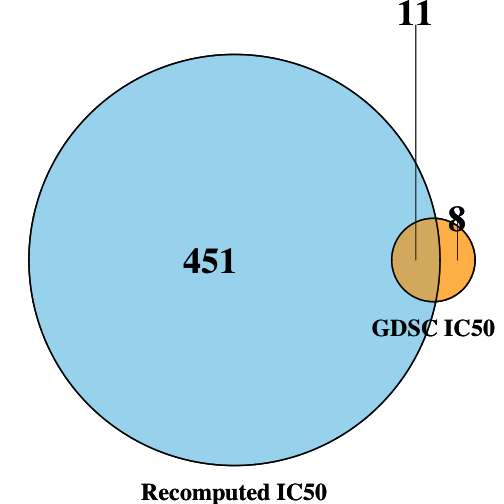
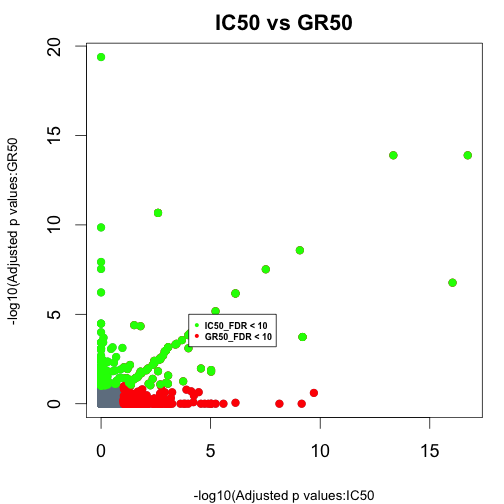
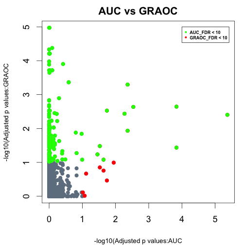
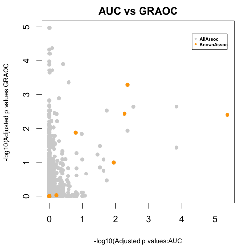

Generate ANOVA plots (Figure 2) in the report
The preprocessing steps used for the calculation of different metrics are documented in the GDSC vignette
vignette("GDSC_Calculate_AlternativeMetrics", package = "AlternativeDrugResponseMetrics").
The results of the preprocessing are stored in the csv files and are further processed by GDSCTools package in Python. For details regarding ANOVA, please check the python notebook ("GDSCTools_ANOVA.ipynb") and other files in the ANOVA folder
The results of the ANOVA analysis is loaded here and the ploting is documented below.
Load data corresponding to different metrics and obtain the p-values.
library(AlternativeDrugResponseMetrics)
l <- grep("results_",data(package="AlternativeDrugResponseMetrics")$results[,"Item"],value = T)
pvalue_ranges<-seq(0,10,by=0.2)
Pvalues_allMetrics<-data.frame(pvalue_ranges)
allData = new.env()
data(list=l,envir = allData)
for(iMetric in ls(allData))
{
#Extract the FDR from each of the ANOVA results file
Allgenes_pvalues <- allData[[iMetric]]
Allgenes_pvalues_corrected<-as.data.frame(sapply(Allgenes_pvalues$ANOVA_FEATURE_FDR, function(x) -log10(x/100)))
p_adjusted_values_allgenes<-Allgenes_pvalues_corrected[,1]
Allpvalues_allGenes<-c()
for(j in 1:length(pvalue_ranges))
{
#Extract the number of drug gene associations for the different p value ranges
Adjustedvalues_WithinRange_allGenes <- length( subset( p_adjusted_values_allgenes, p_adjusted_values_allgenes > pvalue_ranges[j] ))
Allpvalues_allGenes <- c(Allpvalues_allGenes, log10(Adjustedvalues_WithinRange_allGenes))
}
Pvalues_allMetrics <- cbind.data.frame(Pvalues_allMetrics,as.data.frame(Allpvalues_allGenes))
}
headers_Pvalues_allMetrics<-gsub("results_","",ls(allData))
colnames(Pvalues_allMetrics)<-c("pvalue_ranges",headers_Pvalues_allMetrics)
head(Pvalues_allMetrics)
#> pvalue_ranges AUC GRAOC LNGR50 LNIC50 RecomputedAUC
#> 1 0.0 4.668852 4.669763 3.659155 4.668852 4.669763
#> 2 0.2 2.883661 2.959995 3.070776 2.056905 2.250420
#> 3 0.4 2.593286 2.699838 2.752048 1.431364 1.832509
#> 4 0.6 2.371068 2.528917 2.577492 1.278754 1.531479
#> 5 0.8 2.247973 2.380211 2.431364 1.113943 1.462398
#> 6 1.0 2.149219 2.235528 2.292256 1.079181 1.255273
#> RecomputedLNIC50
#> 1 3.577377
#> 2 3.114277
#> 3 2.889302
#> 4 2.664642
#> 5 2.517196
#> 6 2.418301
par(cex=1,mar=c(4,4,2,1),cex.lab=1,cex=1.5,font=2)
#Plot the p values against the number of drug-gene associations
plot(Pvalues_allMetrics$pvalue_ranges,Pvalues_allMetrics$AUC,xlab="-log10 adjusted p values",ylab="log10 (#Drug-gene interactions)",main="Mutation-CNV",col="green",pch=16,type="l",lty=3,lwd=3,cex.axis=1,xlim=c(0,5),ylim=c(0,5))
points(Pvalues_allMetrics$pvalue_ranges,Pvalues_allMetrics$LNIC50,col="slategrey",pch=16,type='l',lty=3,lwd=3,xlim=c(0,5),ylim=c(0,5))
points(Pvalues_allMetrics$pvalue_ranges,Pvalues_allMetrics$GRAOC,col="red",pch=16,type='l',lty=1,lwd=3,xlim=c(0,5),ylim=c(0,5))
points(Pvalues_allMetrics$pvalue_ranges,Pvalues_allMetrics$LNGR50,col="blue",pch=16,type='l',lty=1,lwd=3,xlim=c(0,5),ylim=c(0,5))
points(Pvalues_allMetrics$pvalue_ranges,Pvalues_allMetrics$RecomputedAUC,col="green",pch=16,type='l',lty=1,lwd=3,xlim=c(0,5),ylim=c(0,5))
points(Pvalues_allMetrics$pvalue_ranges,Pvalues_allMetrics$RecomputedLNIC50,col="slategrey",pch=16,type='l',lty=1,lwd=3,xlim=c(0,5),ylim=c(0,5))
abline (v=1,col="red",lty=4,lwd=3)
legend(3.3,5,c(headers_Pvalues_allMetrics[1],headers_Pvalues_allMetrics[2],headers_Pvalues_allMetrics[3],headers_Pvalues_allMetrics[4],headers_Pvalues_allMetrics[5],headers_Pvalues_allMetrics[6]),lty=c(3,3,1,1,1,1),lwd=c(2.5,2.5,2.5,2.5,2.5,2.5),cex=0.5,col=c("green","slategrey","red","blue","green","slategrey"))

Generate venn diagrams to check for the overlap in associations between different metrics (Figure 4 and Figure 14 in report)
Function to make venn diagrams
library("VennDiagram")
#> Loading required package: grid
#> Loading required package: futile.logger
Associations_overlap<-function(Metric1,Metric2,Metric_type,Fig_FileName,col_comb)
{
Metric1_FDR<- Metric1[Metric1$ANOVA_FEATURE_FDR<25,]
Metric2_FDR<-Metric2[Metric2$ANOVA_FEATURE_FDR<25,]
Metric1_Metric2_overlap<-merge(Metric1_FDR,Metric2_FDR,by=c("FEATURE","DRUG_NAME"))
grid.newpage()
#jpeg(Fig_FileName,quality=100)
venn.plot<-draw.pairwise.venn(area1=nrow(Metric1_FDR),area2=nrow(Metric2_FDR), cross.area=nrow(Metric1_Metric2_overlap),category=Metric_type,fill=col_comb,cat.pos=c(180,180),fontfamily = rep("serif", 3),fontface=rep("bold",3),cat.fontfamily=rep("serif",2),cat.fontface=rep("bold",2),cex=rep(3,3),cat.cex=rep(2,2))
grid.draw(venn.plot)
#dev.off()
}
Find the associations that overlap between AUC and GRAOC (Figure 4)
Associations_overlap(results_RecomputedAUC,results_GRAOC,c("AUC","GRAOC"),"AUC_GRAOC.jpeg",c("red","forest green"))

Find the associations that overlap between IC50 and GR50 (Figure 4)
Associations_overlap(results_RecomputedLNIC50,results_LNGR50,c("IC50","GR50"),"IC50_GR50.jpeg",c("red","forest green"))
 Find the associations that overlap between GDSC IC50 and Recomputed IC50 (Figure 16)
Associations_overlap(results_RecomputedLNIC50,results_LNIC50,c("Recomputed IC50","GDSC IC50"),"GDSC_RecomputedIC50.jpeg",c("skyblue","orange"))

Find the associations that overlap between GDSC AUC and Recomputed AUC (Figure 16)
Associations_overlap(results_RecomputedAUC,results_AUC,c("Recomputed AUC","GDSC AUC"),"GDSC_RecomputedAUC.jpeg",c("skyblue","orange"))
Compare the FDRs of 2 different metrics to find out the associations that found in one but not the other; Only those associations with FDR < 10% are highlighted here (Figure 5, Top panel)
Function to plot the FDRs
FDR_comp<-function(metric1,metric2,Fig_FileName,label1,label2,main_heading,legend_labels)
{
#Merge the 2 metrics
Diff_metrics_mergeFDRs<-merge(metric1, metric2, by=c("FEATURE","DRUG_NAME"))
Metric1_Metric2_FDR_assoc<-cbind.data.frame(Assoc=paste(Diff_metrics_mergeFDRs$DRUG_NAME,Diff_metrics_mergeFDRs$FEATURE,sep="-"),Metric1_FDR=as.vector(-log10(Diff_metrics_mergeFDRs$ANOVA_FEATURE_FDR.x/100)),Metric2_FDR=as.vector(-log10(Diff_metrics_mergeFDRs$ANOVA_FEATURE_FDR.y/100)))
#Pick only those associations with FDR < 10%
Metric1_FDR_extract<- Metric1_Metric2_FDR_assoc[which(Metric1_Metric2_FDR_assoc$Metric1_FDR>1),]
Metric2_FDR_extract<- Metric1_Metric2_FDR_assoc[which(Metric1_Metric2_FDR_assoc$Metric2_FDR>1),]
#jpeg(filename=Fig_FileName,quality=100)
par(cex=1,mar=c(4,4,2,1),cex.lab=0.75,cex=1.5,font=2)
plot(Metric1_Metric2_FDR_assoc$Metric1_FDR,Metric1_Metric2_FDR_assoc$Metric2_FDR,xlab=label1,ylab=label2,main=main_heading,col="slate gray",pch=16,cex.axis=1)
#Highlight those associations that are significant and found in one metric, but not the other
points(Metric1_FDR_extract$Metric1_FDR,Metric1_FDR_extract$Metric2_FDR,col="red",pch=16)
points(Metric2_FDR_extract$Metric1_FDR,Metric2_FDR_extract$Metric2_FDR,col="green",pch=16)
#legend(13,20,legend_labels,pch=16,cex=0.5,col=c("green","red"))
legend(4,5,legend_labels,pch=16,cex=0.5,col=c("green","red"))
#dev.off()
}
Plot the FDRs of IC50s and GR50s
IC50_GR50_FDR <- FDR_comp(results_RecomputedLNIC50,results_LNGR50,"IC50_GR50_FDRcomp.jpeg","-log10(Adjusted p values:IC50","-log10(Adjusted p values:GR50","IC50 vs GR50",c("IC50_FDR < 10","GR50_FDR < 10"))

Plot the FDRs of AUCs and GRAOCs
AUC_GRAOC_FDR <- FDR_comp(results_RecomputedAUC,results_GRAOC,"AUC_GRAOC_FDRcomp.jpeg","-log10(Adjusted p values:AUC","-log10(Adjusted p values:GRAOC","AUC vs GRAOC",c("AUC_FDR < 10","GRAOC_FDR < 10"))

Compare the FDRs of 2 different metrics to find out the distribution of known associations (highlighted in orange); Figure 5, Bottom panel
Function to plot the FDRs and highlight known associations
data(GDSC_KnownAssociations)
FDR_KnownAssoc<-function(metric1,metric2,Fig_FileName,label1,label2,main_heading,legend_labels)
{
Metric1_Metric2_FDR_merged<-merge(metric1, metric2, by=c("DRUG_NAME","FEATURE"))
Metric1_Metric2_FDR_merged_DrugFeature<-cbind.data.frame(Metric1_Metric2_FDR_merged,Ident_Drug_Feature=paste(as.vector(Metric1_Metric2_FDR_merged$DRUG_NAME),as.vector(Metric1_Metric2_FDR_merged$FEATURE),sep="-"))
Metric1_Metric2_FDR_merged_assoc_extract<-Metric1_Metric2_FDR_merged_DrugFeature[grepl(paste(as.vector(GDSC_KnownAssociations$Ident_Drug_Feature),collapse="|"),as.vector(Metric1_Metric2_FDR_merged_DrugFeature$Ident_Drug_Feature)),]
Metric1_Metric2_FDR_assoc<-cbind.data.frame(Assoc=paste(Metric1_Metric2_FDR_merged$DRUG_NAME,Metric1_Metric2_FDR_merged$FEATURE,sep="-"),Metric1_FDR=as.vector(-log10(Metric1_Metric2_FDR_merged$ANOVA_FEATURE_FDR.x/100)),Metric2_FDR=as.vector(-log10(Metric1_Metric2_FDR_merged$ANOVA_FEATURE_FDR.y/100)))
Metric1_FDR_extract<-Metric1_Metric2_FDR_assoc[which(Metric1_Metric2_FDR_assoc$Metric1_FDR>1),]
Metric2_FDR_extract<-Metric1_Metric2_FDR_assoc[which(Metric1_Metric2_FDR_assoc$Metric2_FDR>1),]
#jpeg(filename=Fig_FileName,quality=100)
par(cex=1,mar=c(4,4,2,1),cex.lab=0.75,cex=1.5,font=2)
plot(Metric1_Metric2_FDR_assoc$Metric1_FDR,Metric1_Metric2_FDR_assoc$Metric2_FDR,xlab=label1,ylab=label2, main= main_heading,col="light gray",pch=16,cex.axis=1)
points(as.vector(-log10(Metric1_Metric2_FDR_merged_assoc_extract$ANOVA_FEATURE_FDR.x/100)),as.vector(-log10(Metric1_Metric2_FDR_merged_assoc_extract$ANOVA_FEATURE_FDR.y/100)),col="orange",pch=16)
legend(4.3,4.8,legend_labels,pch=16,cex=0.5,col=c("light gray","orange"))
#legend(14,19,legend_labels,pch=16,cex=0.5,col=c("light gray","orange"))
#dev.off()
}
Plot the FDRs of IC50s and GR50s with known associations
IC50_GR50_FDR_KnownAssoc <- FDR_KnownAssoc(results_RecomputedLNIC50,results_LNGR50,"IC50_GR50_FDRcomp_KnownAssoc.jpeg","-log10(Adjusted p values:IC50","-log10(Adjusted p values:GR50","IC50 vs GR50",c("AllAssoc","KnownAssoc"))

Plot the FDRs of AUCs and GRAOCs with known associations
AUC_GRAOC_FDR_KnownAssoc <- FDR_KnownAssoc(results_RecomputedAUC,results_GRAOC,"AUC_GRAOC_FDRcomp_KnownAssoc.jpeg","-log10(Adjusted p values:AUC","-log10(Adjusted p values:GRAOC","AUC vs GRAOC",c("AllAssoc","KnownAssoc"))

Compute distance to drug targets to find out how relevant are the drug gene interactions identified through ANOVA analysis of different drug response metrics
library("igraph")
data(OmniPathNW)
data(Orig_Target)
IC50_Dist<-Distances_DrugTargets(results_RecomputedLNIC50,write.File=T,"IC50_DistanceToTargets.txt")
GR50_Dist<-Distances_DrugTargets(results_LNGR50,write.File=T,"GR50_DistanceToTargets.txt")
AUC_Dist<-Distances_DrugTargets(results_RecomputedAUC,write.File=T,"AUC_DistanceToTargets.txt")
GRAOC_Dist<-Distances_DrugTargets(results_GRAOC,write.File=T,"GRAOC_DistanceToTargets.txt")
Generate histograms to show the distribution of distances to drug targets